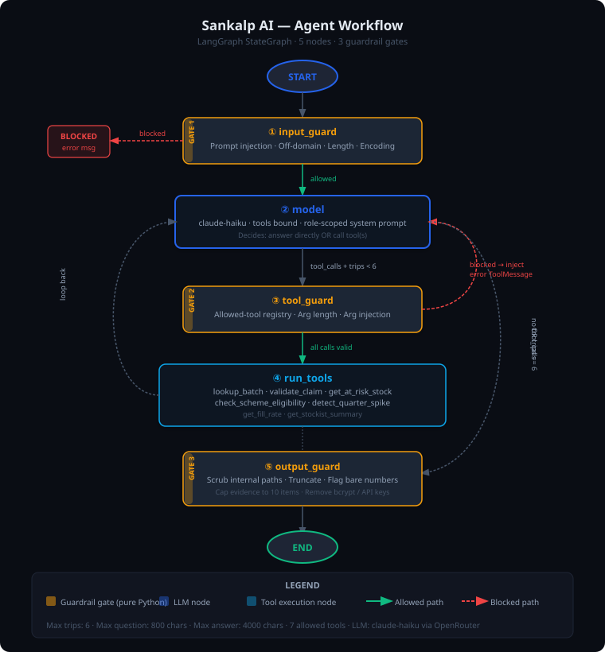

A draft brief for the Pfizer Channel Intelligence Platform (Project Sankalp) — what problem each feature solves, what money it recovers, and who needs it.
Pfizer's General Medicines trade channel is simultaneously long and short. Expiry returns have risen from under 1% to 2.75% of sales in two years — roughly INR 1.4 crore per quarter. At the same time, fill rate has fallen from 99.5% to 90.9%. These two failures share a single root cause: end-of-quarter scheme incentives force 30–34% of a quarter's volume into the last 9 days, stockpiling product at stockists who cannot sell it before expiry, while other territories run dry. A two-person claims team processes 4,500 claims per year with no automated cross-check — the conditions for systematic over-crediting.

audit_logs table. The LLM is
bounded: it cannot invent a number, it cannot expose the data layer, and it cannot
be tricked into acting outside its domain.
| Feature | CFO | Supply Chain | Claims Finance | Sales RSM | CNF Agent | Admin |
|---|---|---|---|---|---|---|
| Dashboard | ✅ | ✅ | ✅ | ❌ | ❌ | ✅ |
| Claim Findings | ✅ read | ❌ | ✅ full | ❌ | ❌ | ✅ |
| At-Risk Stock (all) | ✅ | ✅ | ❌ | ❌ | Own CNF | ✅ |
| Quarter Spike | ✅ | ✅ | ❌ | ❌ | ❌ | ✅ |
| Fill Rate | ✅ | ✅ | ❌ | ❌ | ❌ | ✅ |
| Stockist Risk | ✅ all | ✅ all | ✅ all | Own territory | ❌ | ✅ |
| Ask AI | ✅ | ✅ | ✅ | ❌ | ❌ | ✅ |
| Admin / Batch | ❌ | ❌ | ❌ | ❌ | ❌ | ✅ |